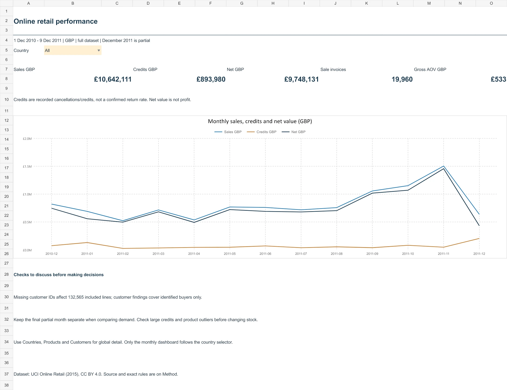

What the business
needs to know.
The task was to turn a large transaction file into a usable sales report and a short list of records that need checking. The report answers where sales came from, which products led sales value and which credits deserve attention first.
The domestic market dominates.
84.6% of sales came from the UK. That makes UK service and fulfilment reliability an operational priority. Overseas expansion needs a separate cost and margin assessment.
November is worth planning around.
£1.50 million in sales made November 2011 the strongest complete month. This suggests a seasonal question for a gift retailer, but one year of data cannot establish a repeatable forecasting pattern.
One transaction explains most December credits.
Credit C581484, for £168,469.60, accounts for 82.1% of December’s £205,089.27 in credits. Sale 581483 has the same customer, product, number of units and unit price and was recorded just 12 minutes earlier.
That is a strong lead to check for an order reversal. It is not enough to call the credit an error or a physical return. A reviewer should compare the original documents before deciding what happened.
£168,469.60
£168,469.60
A product leader, not yet a stocking decision.
REGENCY CAKESTAND 3 TIER (22423) led product net value at £164,459.49. That identifies a product for deeper inventory and margin review. It does not tell us whether it is the most profitable product.
Which credits should
be checked first?
The 25 largest credit lines add up to £490,827.41, or 54.9% of all recorded credit value. The review workbook includes the invoice, date, source row, value, possible matching sale and a specific next step for each entry.
Only three of these 25 entries have an exact earlier sale matching the stated rule. Unmatched entries stay open for investigation. The analysis also separates the £235,281.59 of AMAZONFEE credits from the question of product returns.
For a finance or operations team, this creates a focused starting list: inspect high-value entries, confirm their reasons, and avoid treating fees or order reversals as customer returns.
Download the credit reviewStart on “Start here” for the findings, then use “Credit review” for all 25 entries and their source references.
What was cleaned?
The source contains 541,909 invoice lines. A line is one item on an invoice. The cleaning process keeps the source intact, separates exact repeats and holds zero or negative prices for review.
| Disposition | Source rows |
|---|---|
| Included in the analysis | 534,129 |
| Exact duplicate repeats, held separately | 5,268 |
| Additional non-positive-price rows, held separately | 2,512 |
| Original source records | 541,909 |
132,565 included lines have no customer ID. Their value stays in the overall totals. Customer segments and concentration measures cover identified buyers only.
Missing identities were not invented, large transactions were not trimmed to improve the charts, and excluded records remain available for review.
How the report
was built.
Understand what each row represents.
Each row represents an item on an invoice. Multiple rows can belong to the same order or customer. The original workbook is preserved unchanged. Processed rows carry their original worksheet row numbers, so an issue can be traced back to its source.
Define the cleaning rules.
Exact duplicates are detected across all eight original fields, with the first occurrence retained. Non-positive prices are held separately. A C-prefixed invoice with a negative quantity is treated as a credit. Missing customer IDs remain missing.
Prepare the data, then build the workbook.
Python prepares and groups the source records. Excel formulas calculate net values, average order values, ratios, customer activity segments and dashboard summaries. The workbook has 10 sheets, four editable charts and five filterable tables.

Check that the totals agree.
Row counts reconcile to the original 541,909 records. The invoice totals agree with the cleaned transaction file. Monthly results agree with a separate calculation from the source. Country selection and activity-threshold changes were tested; exported formulas and chart references were checked.
Definitions and important limitations
- Net value is sales minus recorded credits. No costs are available, so it is not profit.
- December 2011 ends on 9 December. Its total cannot be compared directly with a complete month.
- Credits are not linked to purchase cohorts. The credit-to-sales ratio is not a verified return rate.
- Without a source line ID, exact duplicate removal could affect legitimate repeats. This is a documented assumption.
- Customer activity groups use a transparent recency rule, not a validated churn model.
- This is a prepared snapshot, not a native Power Query refresh or PivotTable model. Checks used the spreadsheet engine and exported structure; the file was not opened in Microsoft Excel during verification.
What I’d do next.
- Confirm the data rules. Review duplicate handling and non-positive prices with the business before using the report operationally.
- Investigate the credits. Inspect large credit invoices and their original purchases to understand the cause.
- Improve customer-ID capture. Make the coverage gap visible before using customer repeat rates to guide decisions.
- Add the missing business context. Bring in costs, margins and more years of history before recommending stock levels or expansion.
Explore the evidence.
Download the sales analysis and the separate credit review. Both use the same public dataset, with source references and documented rules. The original data is available from UCI.
Download workbook Credit review Download case studySource: Chen, D. (2015). Online Retail, UCI Machine Learning Repository. CC BY 4.0. Historical public data; this project is not a commissioned client engagement.